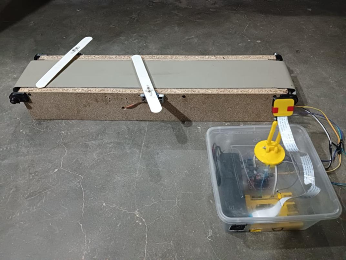
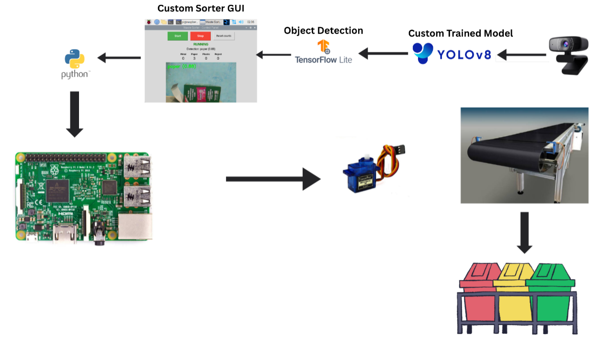
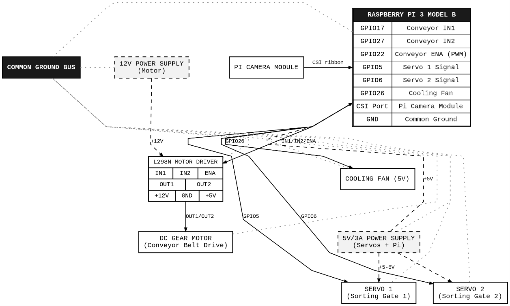
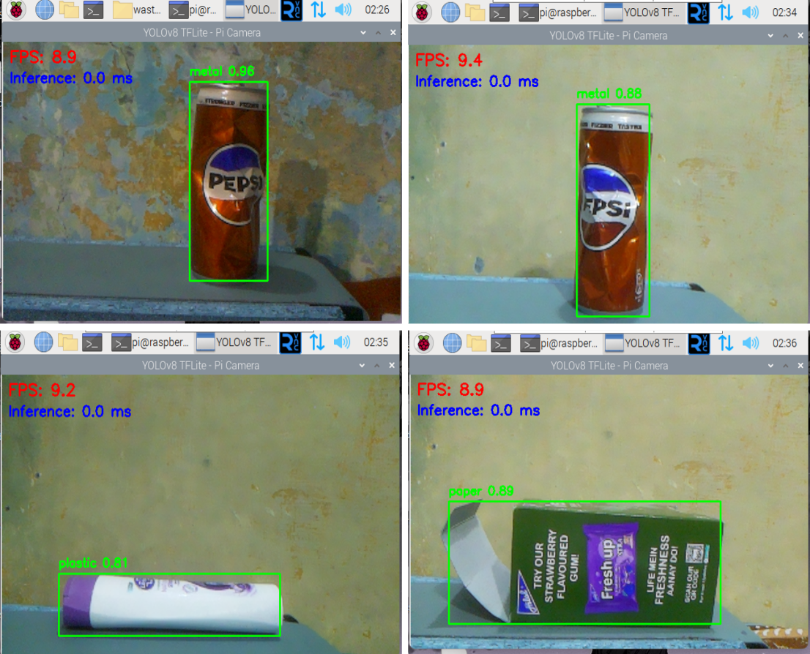
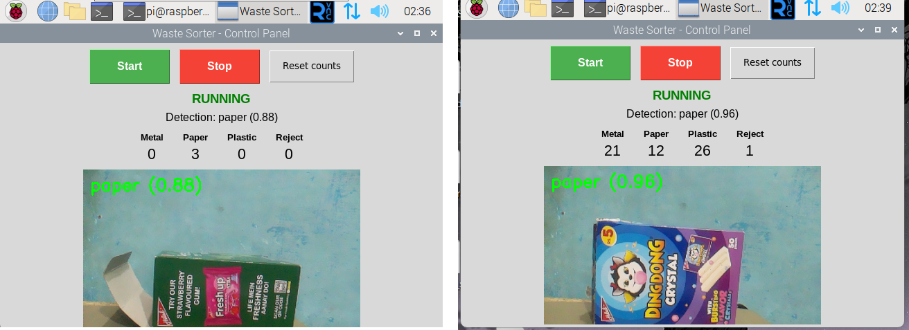
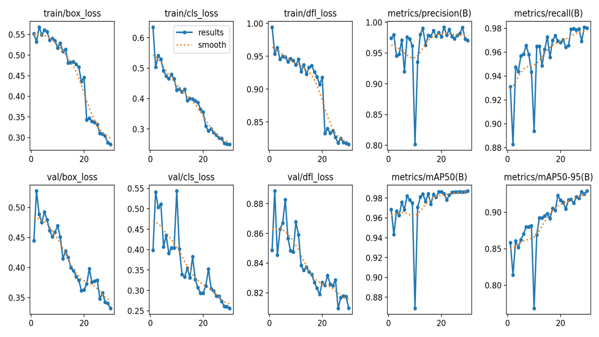

ELECTRICAL (AUTOMATION & CONTROL) ENGINEERING
I build automation and control systems from embedded hardware and closed-loop control to the applied computer vision that lets machines make decisions on the line.
I'm a recent Electrical Engineering (Automation & Control) graduate from Quaid-e-Awam University of Engineering, Sciences & Technology (QUEST), Nawabshah.
My work sits at the intersection of control systems, embedded hardware, and applied machine learning designing systems that sense, decide, and act in the physical world, not just on a screen.
Most recently, that meant building a working recyclable-waste sorting line from scratch: camera to model to motor.
A working recyclable-waste sorting line: a custom-trained YOLOv8n model identifies metal, paper, and plastic in real time, deployed via TensorFlow Lite on a Raspberry Pi 3, driving servo-actuated diverters over a DC-motor conveyor. Supervised by Prof. Dr. Abdul Sattar Saand.






Published in Spectrum of Engineering Sciences (Vol. 4, No. 3, 2026, pp. 1846–1856), an HEC-recognized journal. Compared MMC and CHB multilevel converter topologies for HVDC transmission under Phase-Shifted PWM control, using MATLAB/Simulink models of a 13-level configuration and FFT-based harmonic analysis. Co-authored with Ghulam Mustafa Bhutto, Munwar Ayaz Memon, Huzefa Shakeel Ahmed, Aslam Pervez Memon, Ahmed Sameer Raza, and Laiba Memon.
Modeled and simulated a 550 W solar PV module in MATLAB Simulink, analyzing efficiency, output power, and V-I characteristics against theoretical calculations.
Download report (.docx)Investigated transformer efficiency and loss mechanisms copper, hysteresis, eddy current, and stray load losses through circuit simulation and graphed results.
Download report (.docx)Built a vehicle cruise-control model in Simulink with a PID-controlled throttle loop, auto-tuned via the PID Tuner App to hold a driver-set reference speed.
Download report (.docx)Power Electronics CEP assignment sized a DC-DC boost converter and 48V battery bank for a residential offline UPS, with break-before-make transfer logic simulated end-to-end in Simulink.
Download report (.docx)MATLAB-based IoT weather station simulating temperature, humidity, and pressure sensors with live plotting, CSV logging, threshold alerts, and MQTT placeholders for cloud connectivity.
Download report (.docx)Modeled a separately-excited DC motor in MATLAB Simulink and analyzed PID-based speed control under dynamic load disturbances, evaluating rise time, settling time, steady-state error, and disturbance rejection. Co-authored with Huzefa Shakeel.
Download paper (.docx)A case study of Pakistan's Jhampir Wind Corridor — modeled a 500 MW wind + solar HRES on a weak grid and analyzed Rate of Change of Frequency during generation loss, proposing a battery sizing methodology for synthetic inertia support.
Download paper (.docx)Summer internship — hands-on exposure to engineering and maintenance operations.